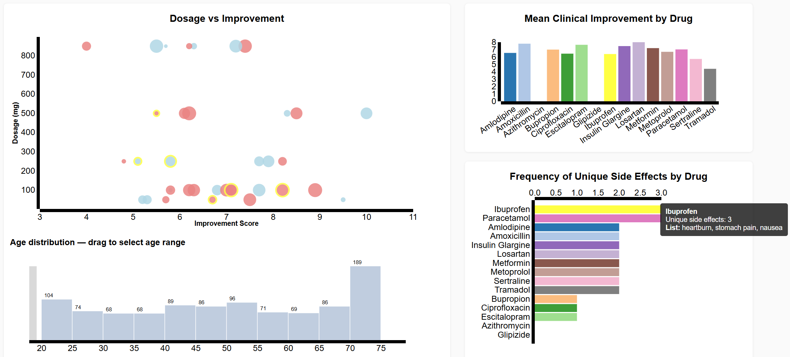
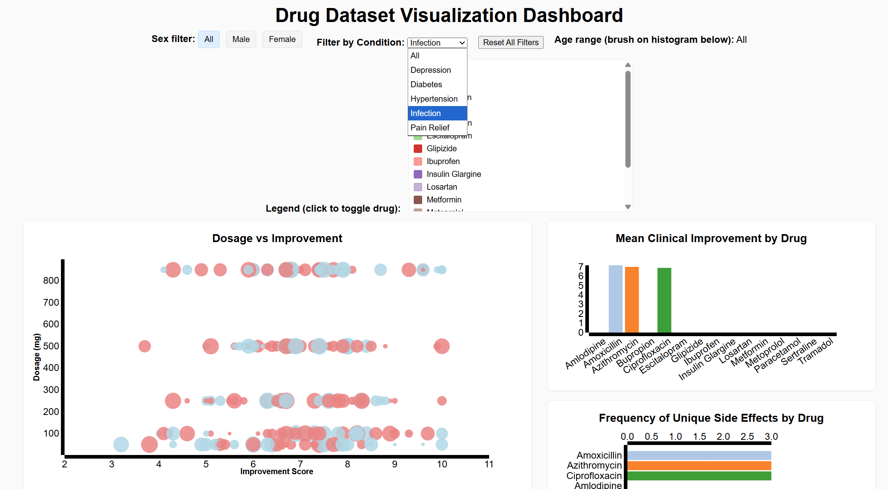
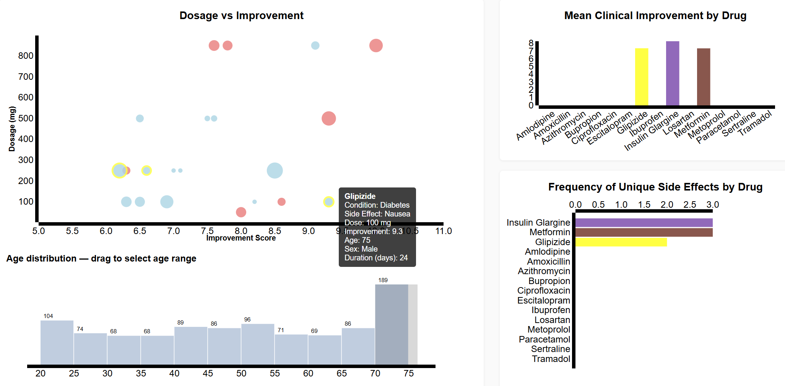

Once the dataset was picked, I tried to figure out the best way to shape the data to encompass as many points as possible. The main question came from this and was how dosage and improvement score can correlate, along with a secondary question of if side effects influence improvement. From these, the original idea was the first sketch, which included connected scatterplot/bar graphs to highlight different correlations of the data. From the first to final sketch, some things changed to make sure all attributes of the data were connected. This included placement of the graphs, switching the scatterplot axes, changing scatterplot color to gender, and adding filters by gender, age, and condition.
While making the visualization, I started to like the side-by-side placement of the graphs with controls at the top. During the making of the scatterplot, I realized that the data didn’t have as much range to it as I hoped (dosages were either 50, 100, 250, 500, or 850 mg), so I thought that switching the axes made the data look better; although with more varying data the graph would look more complete. I liked the view of gendered color instead of drug specific since it helped the differences appear better, and there was already a way to highlight a specific drug anyways. Finally, filtering gender, age, and condition were glossed over in the makings of the graphs until it was almost done; these filters enhance the quality and ease of data collection.
For the scatterplot, dosage vs improvement, I used 2 of the numerical variables against each other, which were improvement and dosage, with sizing of circles being scaled by treatment duration. Another way to do this is switching dosage and duration, which would give a similar effect, but I thought dosage would be more applicable to assessing characteristics of the different drugs. I wanted the scatterplot so that each patient could be represented, and with more data the dosages would be more diverse. Color was used to show gender; I thought about using shapes but decided against it as not to muddle the use of size. By using the color channel this way, the different drugs aren’t all represented, but it doesn’t take too much away since you can still highlight a drug by clicking and filtering. Finally, the tooltip gives important information such as age, condition, and side effects along with the other attributes.
The first bar graph, mean clinical improvement by drug, is simple and takes the average improvement score of each unique drug to compare them. The drugs are each color coded for ease of readability; since no specific color is attributed to a drug, a range of dark and light colors are used to create contrast.
The last graph, frequency of unique side effects by drug, shows how many unique side effects a drug has. Due to the layout of the data set, counting total side effects would only show how many occurences of the drug there were. With a more complete dataset that had multiple side effects listed for each column, total side effects would be the better option. Again, bars are colored according to the drug, in the same fashion as before.
There are various filters in the visualization. At the top is a gender and condition filter and located under the scatterplot; a range of ages shows a distribution of ages as well as functions as a filter for only showing certain ages. A legend of the drugs and their colors is located under the top filters, and clicking a drug can filter it from view. Finally, a very useful tool is the highlighter; by clicking a bar on either bar graph, the corresponding bar on the other one will turn bright yellow, and any patients with that drug will be highlighted yellow. All these functions serve as helpful aids in increasing the readability of the visualization and its data.
Finally, I arranged the graphs as they are to highlight the scatterplot as the main mode of information, and the bar graphs as aid to connect correlations and lines of inquiry. By placing the scatterplot on the left and bigger than the others, the user will see it first. And the bar graphs, off to the right side and stacked on top of each other, serve as extensions of the scatterplots data.
The visualization can be used to answer many questions about the drugs in the dataset. First, it can be used to find out how common side effects are in different age ranges. Here, for example, in 18–19-year-olds Ibuprofen and Paracetamol have most side effects, and you can see what they are. You can also see that the dose doesn’t regularly go above 500 mg, and the improvement is average.
Secondly, the use of drugs in accordance with condition can be seen by a simple filter. As seen here, by only filtering by the condition “infection” only the drugs Amoxicillin, Azithromycin, and Ciprofloxacin are used with similar efficacy.
Lastly, comparing the efficacy of drugs is simple. In this example, I filtered with a 70+ age range and diabetes condition. I wanted to look at Insulin Glargine and compare it to other drugs. As you can see via the graphs, Glipizide has less unique side effects and a smaller dose without sacrificing much improvement. You can see though, it is only used in males in this dataset which may be a limitation.
As you can see, this visualization can answer many questions about the drugs listed and how they can help patients in different areas. Comparisons are easy to make and see with various levels of filtering and visual channels such as color and size aiding in the scatterplot.